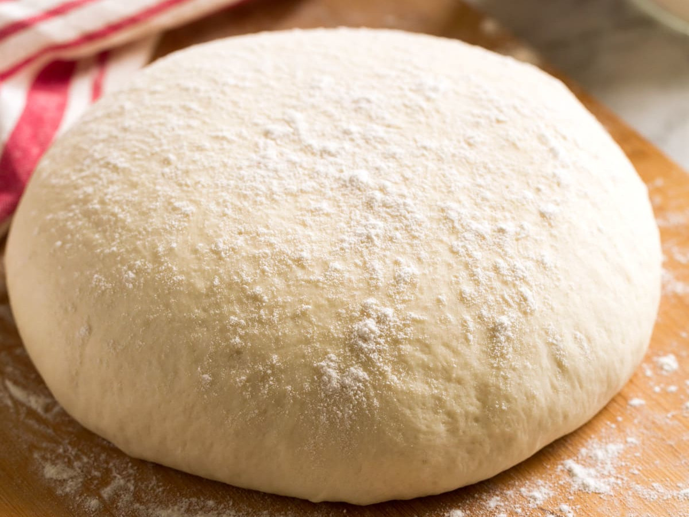

Pizza napolitaine
 Pierre
Pierre
Mars 2025
Pour réussir cette pâte à pizza il vaut mieux avoir une balance de précision car le bon dosage de la levure est déterminant. Il est possible de la faire dans un four classique (à 250°C, ou mieux à 300°C, si le four le permet), mais un « vrai » four à pizza chauffé à 450°C donnera un résultat bien supérieur. Une pierre réfractaire peut aider.

- Temps de préparation 45 min (+24h/1h/2h de repos)
- Nombre de convives 4 personnes
Ingrédients
Valeurs nutritionnelles
- Calories 622 kcal
- Glucides 124 g
- Protéines 17 g
- Lipides 6 g
- Sucres 2 g
Instructions
- 1 24h avant, préparez la poolish : dans un grand récipient, mélangez 2g de levure avec 125ml d'eau et 2g de miel. Ajoutez 125g de farine, mélangez bien.
- 2 Laissez reposer 1h à température ambiante (récipient hermétique), puis placez au réfrigérateur pour 16 à 48h.
- 3 Sortez la poolish et mélangez avec 300ml d'eau, 550g de farine et 15g de sel.
- 4 Pétrissez 10 à 20 min sur un plan fariné (ne pas hésiter à ajouter de la farine si c'est nécessaire). Couvrez la pâte et laissez reposer 15 min.
- 5 Enduisez vos doigts d'huile d'olive, puis repliez la pâte sur elle-même sans toucher le dessus (important: on rabat simplement la périphérie vers le dessous pour favoriser la levée). Laissez reposer 1h.
- 6 Divisez en 4 parts égales, repliez chaque pâton sur lui-même, avec le même geste. Laissez reposer 2h.
- 7 Préchauffez le four au max (idéalement 450°C). Préparez vos garnitures. Façonnez la pâte à la main, surtout pas avec un rouleau : creusez le centre, puis étirez vers la périphérie en gardant de l'air sur les bords pour une croûte croustillante.